Featured Projects
A collection of things I've built
8 projects across AI, Healthcare & Data Engineering
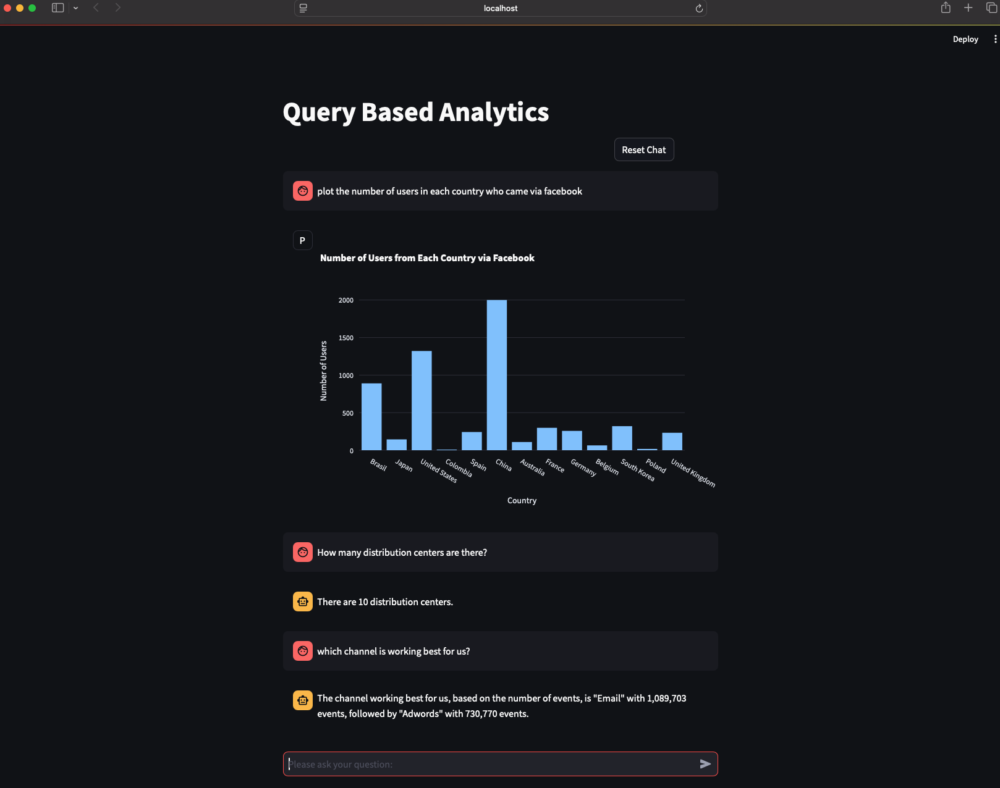
LangChain EDA Assistant
Chatbot for natural language interactions with SQL databases, enabling real-time visualization and data exploration insights.
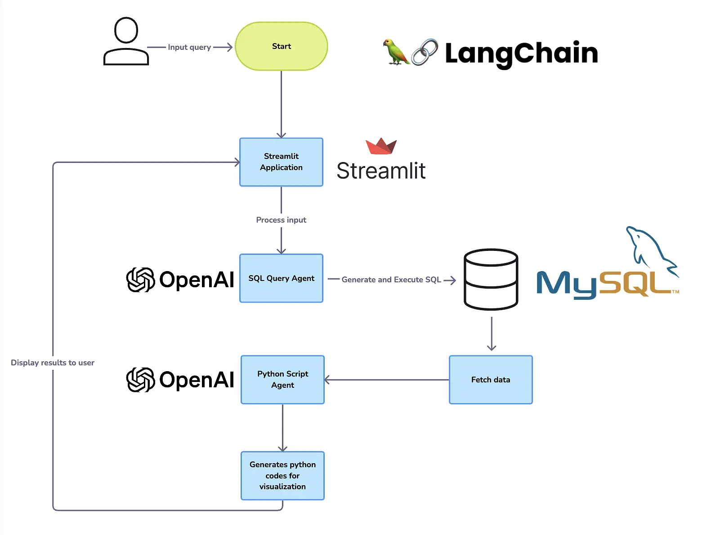
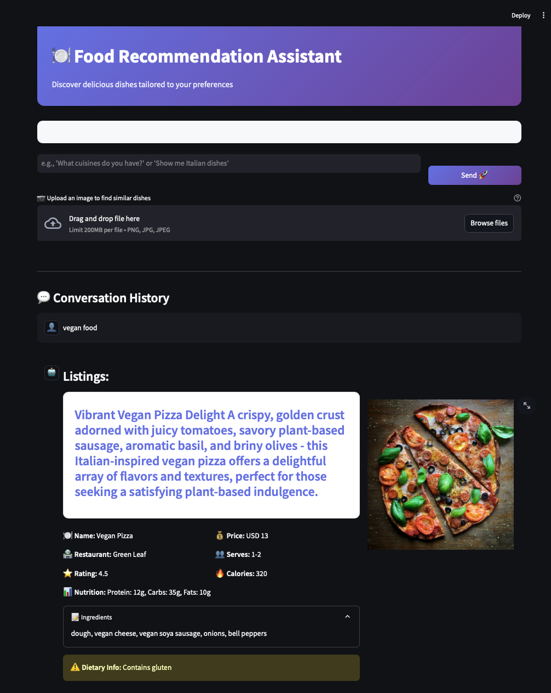
Multimodal Food Recommendation RAG
RAG system combining text and image understanding for personalized recipe suggestions with explainable AI.
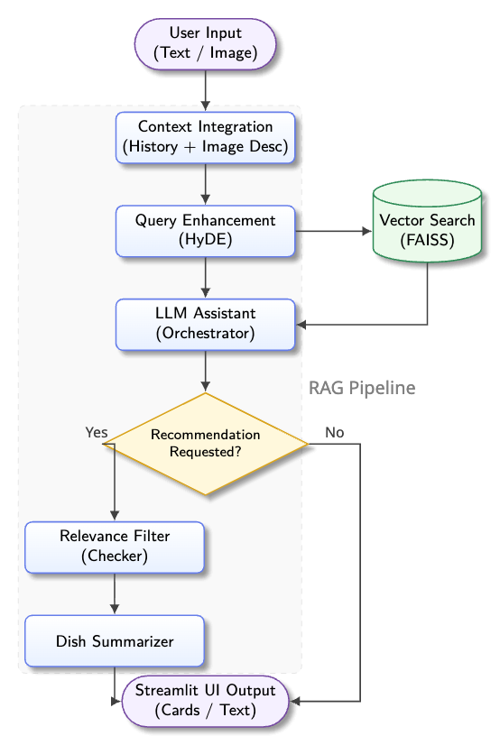
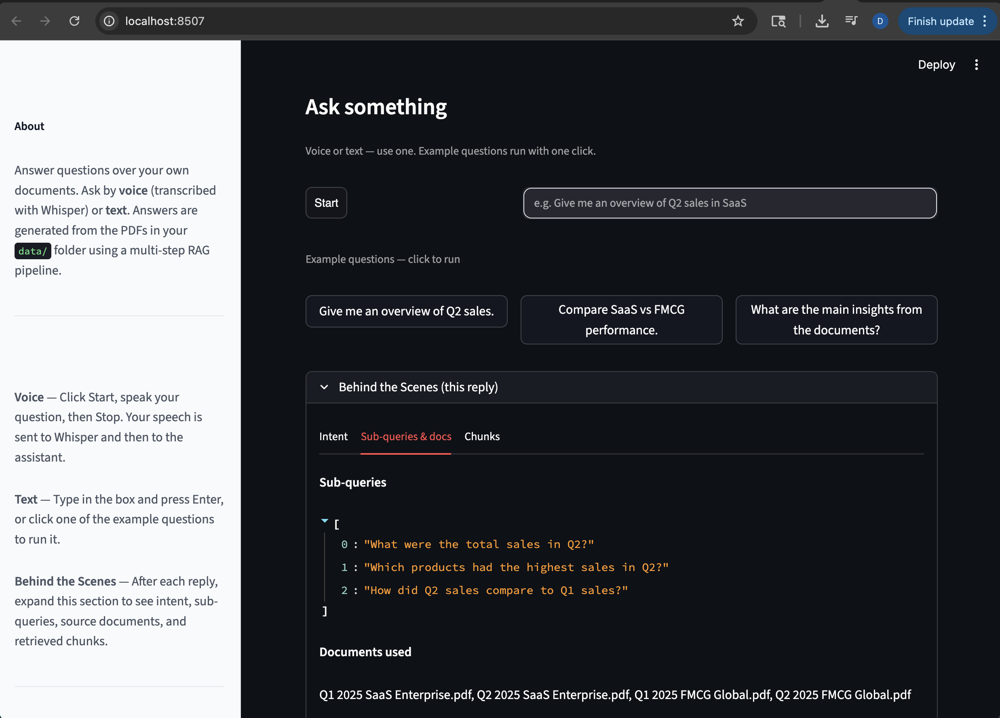
AI Business Assistant
Multi-step RAG pipeline with LangGraph for PDF Q&A. Supports voice input via Whisper and text chat with transparency into retrieved chunks.
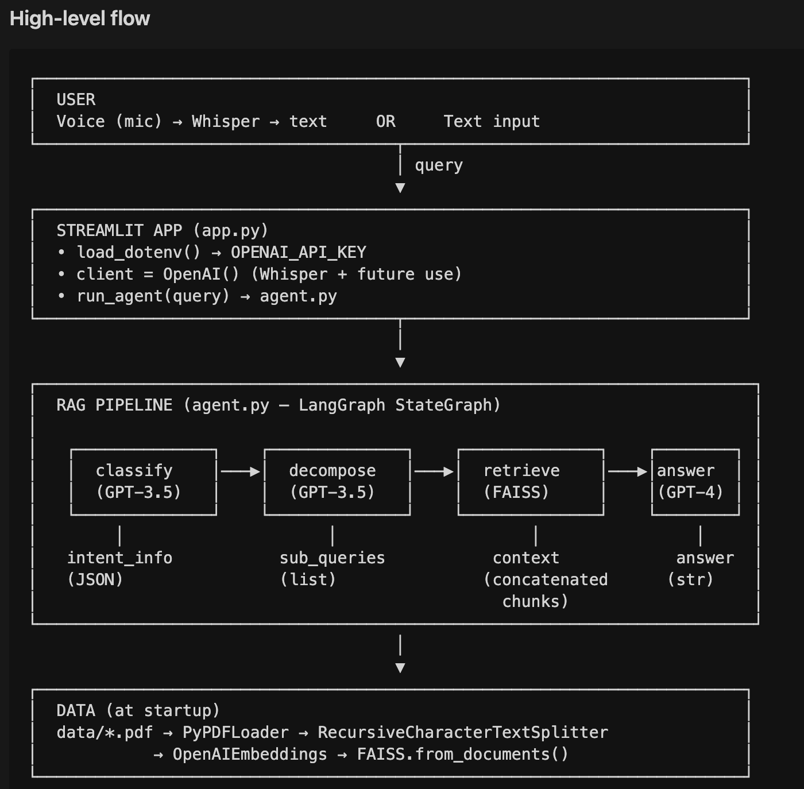

Antibiogram Zone Detector
Automated analysis of bacterial susceptibility zones using image classification, object detection, and pixel-level segmentation.
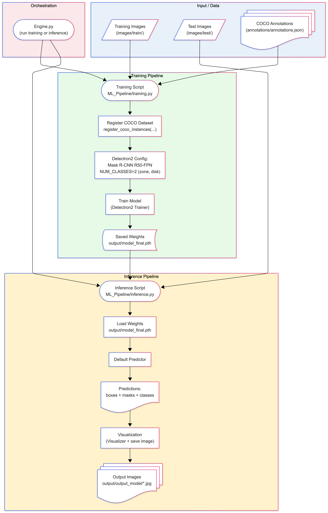
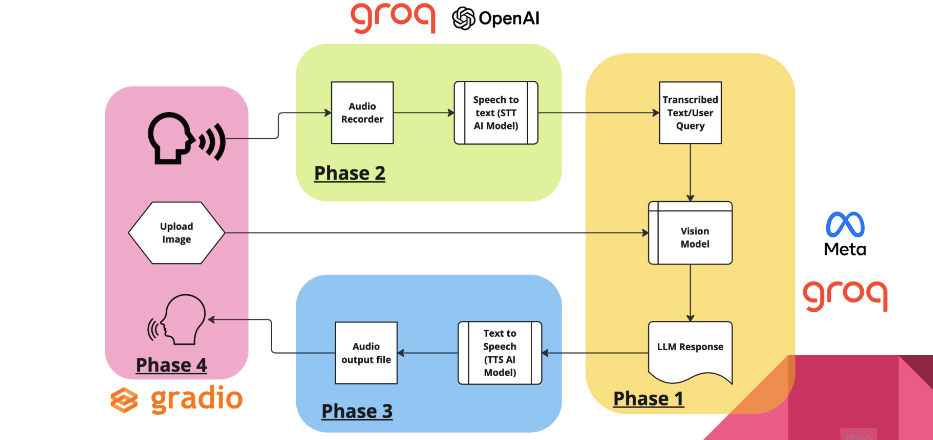
ImageTalk
Multimodal AI app for voice-based interaction over visual content using Groq, Whisper, and LLaMA for end-to-end speech understanding.
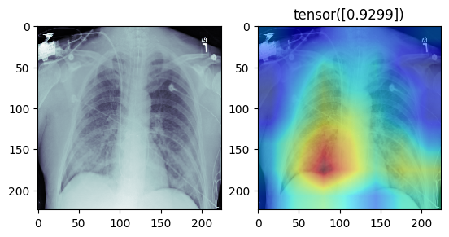
Pneumonia Detection
Deep learning pipeline using modified ResNet18 for chest X-ray classification with Class Activation Maps for visual interpretability.
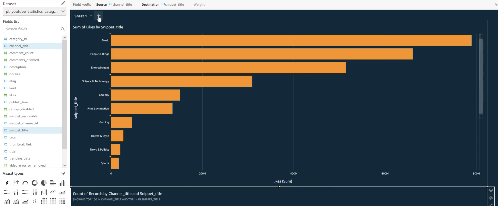
AWS ETL Data Pipeline
End-to-end pipeline to manage, streamline, and analyze YouTube trending data based on categories and metrics.
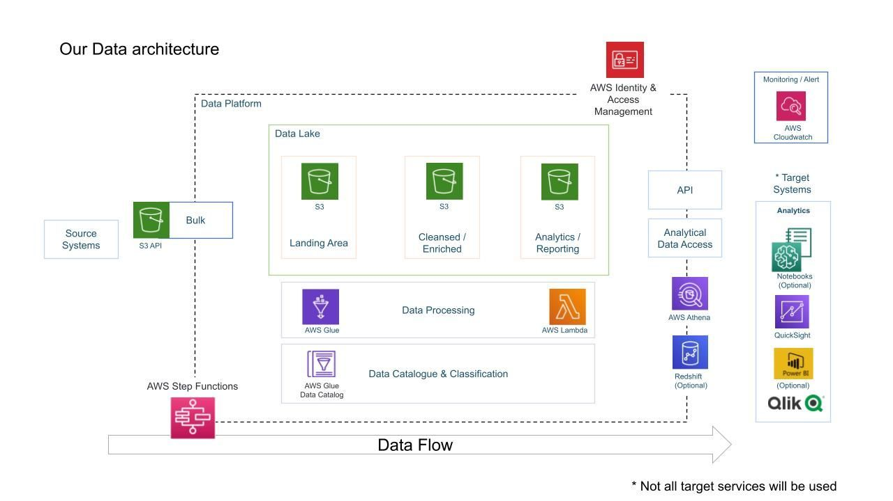

SQL Data Warehouse
Comprehensive data warehousing solution demonstrating industry best practices from schema design to actionable analytics.